用MFP編程語言繪制圖形
MFP的繪圖函數，既可以在基於安卓的可編程科學計算器中運行，也可以在臺式機或者筆記本電腦上基於JAVA的可編程科學計算器中運行，並且運行效果完全一樣。為了文檔撰寫的方便，在本教程文檔中，所有的例子給出來的示例圖都是在基於JAVA的可編程科學計算器中運行得到的結果，但是用戶把代碼拷貝到安卓上面運行，也可以得到相同的圖像。
本教程文檔中，給出了調用可編程科學計算器繪圖的很多實例，由於這些實例都只需要調用一次MFP語言的繪圖函數，也就是用一條MFP語句實現，所以，本教程文檔中的所以例子都實現在不帶參數的函數::mfpexample::plotGraphs函數中。該函數的代碼可以在繪圖示例壓縮包中的graph libs目錄下的examples.mfps文件中找到。用戶可以解壓縮該示例壓縮包，然後把graph libs目錄拷貝到基於JAVA的可編程科學計算器目錄的scripts子目錄下，然後在MFP提示符下運行mfpexample::plotGraphs()，即可看到全部圖形。
第1節 繪制表達式的圖像
繪制表達式圖像對用戶來講是最簡單的一種繪圖方式，相當於打開智慧計算器，輸入表達式，然後點擊繪圖按鈕。對表達式繪圖，用戶不用管繪制圖形的範圍，因為這個範圍在圖像繪制完成之後可以由用戶動態調整，也不用管圖像的顏色，標題，點或線的形態，這些由函數根據表達式的個數，特征自動地設置，更不用管繪制的圖像的類型（是二維，三維還是極坐標圖像），這個由函數根據變量的個數自動地加以判斷。
MFP提供的繪制表達式的圖形的函數為plot_exprs，具體用法如下：
函數plot_exprs分析最少1條，最多8條表達式以繪制2維或者3維圖形（取決於表達式中未知變量的個數）。輸入的表達式可以是一個等式，比 如"4*x+9 == y +z**2"和"log(x*y) == x"，也可以是一個左側為未知變量的賦值表達式，比如"k= 3+ 7 * sin(z)"，還可以是一個可以被看作為賦值表達式的表達式，比如"9*log(y)"可以被看作"x = 9 * log(y)"。註意所有表達式中未知變量的總數不多於3，每一條表達式中的未知變量的個數不能少於未知變量的總數減一。未知變量的起始範圍可以在設置中設定，缺省是從-5到5，但是使用者可以在圖形繪制出來之後動態調整每個未知變量的範圍。如果有兩個未知變量並且其中一個是希臘字母α、β、γ或者θ，則 繪制極坐標圖形而不是普通2維圖形。本函數的一個例子是plot_exprs("4*x+sin(y)", "x*lg(x)/log2(z)==y"), "4-y**2==(x**2 + z**2)")。需要指出的是，如果是繪制二維隱函數表達式，這個函數最多能繪制出4個表達式解；如果繪制的是3維隱函數表 達式，這個函數會根據情況，可能會求每一個變量的最多兩組解，繪制出最多6個解表達式圖形，這樣一來，整個求解繪圖過程會花費比較長的時間。並且，由於plot_exprs函數有內在的，最多繪制8條曲線（面）的限制，對隱函數繪圖時，一個隱函數就可能需要6條曲面來繪制，所以，plot_exprs的參數不能包含太多的隱函數表達式，否則會報出無法繪制太多曲線的錯誤。
比如，用戶想在同一幅圖上繪制兩條曲線如下：
f(x) = ln(x) + 2 x - 6
以及
g(x) = x3 + 0.9 x
，調用函數時，註意到這兩個表達式都並非隱函數，所以，表達式參數不必輸入f(x)和g(x)，只用輸入純表達式部分（這裏是等號右邊的部分）既可。
但是，要註意MFP的表達式，操作符，包括乘號和函數調用時的括號，不可以省略，所以，表達式在MFP中必須寫為ln(x)+2*x-6，而應該寫成x**3+0.9*x，註意在MFP中，次方符號是**而不是^。
最後，由於plot_exprs輸入的參數必須為字符串，所以不要忘記給表達式加上引號，整個函數的調用語句為（第一種調用方法）：
plot_exprs("ln(x)+2*x-6", "x**3+0.9*x")
用戶也可以將函數的調用語句寫為（第二種調用方法）：
plot_exprs("y==ln(x)+2*x-6", "x**3+0.9*x==y")
，或者（第三種調用方法）：
plot_exprs("y=ln(x)+2*x-6", "y=x**3+0.9*x")
。第二種和第三種調用方法都設定了y變量，這裏的y變量指的是待繪圖的表達式在y坐標軸上的值，相當於待繪圖的表達式中的f(x)和g(x)。使用單一的y變量而不是兩個不同的變量（比如yf和yg）來代表f(x)和g(x)的原因在於，我們希望在同一張圖上繪制這兩個表達式，所以f(x)和g(x)的值的投影都在同一個坐標軸（也就是y代表的坐標軸）上。如果用兩個不同的變量分別代表f(x)和g(x)，意味著f(x)和g(x) 的值的投影在不同的坐標軸上，這樣就不是繪制二維曲線，而是三維曲線了。
用戶可能還註意到，在第二種調用方法中，我們使用的是等號（==），y既可以在等號的左邊，也可以在等號的右邊；而在第三種調用方法中，我們使用的是賦值號（=），y只能在賦值號的左邊。這種要求完全符合MFP的規則——我們可以讓一個表達式等於某個變量的值（變量和表達式分置等號兩側，不管誰左誰右），或者把表達式的值賦給某個變量（變量位於賦值號的坐標，表達式位於右邊），但我們不能夠把變量的值賦給表達式。
函數繪制出來的圖像如下。用戶可以拖動圖像對圖像進行上下左右的平移，也可以點擊放大縮小按鈕來對圖像進行縮放，註意，無論平移還是縮放，都會造成繪圖範圍發生變化，一些點將會被重新計算，所以如果是在手機上運行，用戶可能會感覺到時延，如果圖像很復雜，計算量很大，用戶甚至可能會覺得有點卡。但在電腦上，對這些圖像的處理，應該是輕而易舉。
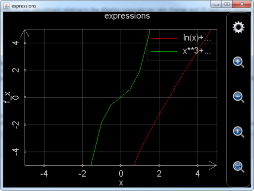
圖1： 調用plot_exprs函數繪制表達式二維圖形。
用戶可能還會覺得，繪制出的圖像，特別是綠色的曲線，不夠平滑。這時就需要點擊圖上的齒輪按鈕，對圖像設置進行調整，點擊齒輪按鈕後出現的設置對話框參見下圖。圖中，紅色長方形圈出的部分的左邊用於設定繪制圖形的步數，也就是在繪制範圍內計算多少個點，步數越多，圖像越平滑，但計算花費的時間越長，用plot_exprs函數繪制二維圖像，缺省步數為20步；紅色長方形圈出的部分的右邊用於設定是否自動偵測奇異點，顯然，偵測奇異點需要花費更多的計算時間，用plot_exprs函數繪制二維圖像，缺省是不偵測奇異點的。如果用戶用智慧計算器作圖，缺省步數為100步，並且會自動偵測奇異點，所以，智慧計算器做出的表達式圖像會更平滑，更逼真，當然，這也是有時候用戶抱怨用智慧計算器作圖比較“卡”的原因。
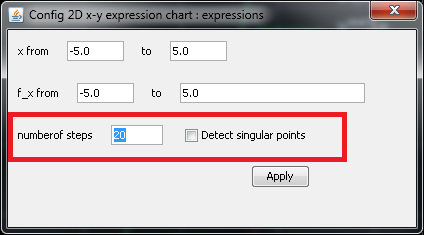
圖2： 設置二維圖像。
再比如，我們想繪制如下表達式的圖像：
r2 = α2 + 9
r = cos α
α = sin r
則可以調用函數
plot_exprs("r**2==α**2+9","r==cos(α)","α==sin(r)")
或者寫成
plot_exprs("r**2==α**2+9","cos(α)"," sin(r)")
在這裏，r==cos(α)和α==sin(r)的左側變量和等於號都可以省略，MFP會根據三個表達式所包含的總的變量個數和名稱將表達式cos(α)和sin(r)自動補全，但r**2==α**2+9的任何一個部分都不能省略，原因是r**2==α**2+9是隱函數等式。
函數繪制出來的圖像如下。由於表達式中含有希臘字母α，並且總的未知變量的個數為2，所以最終繪制出來的圖像是極坐標圖形。註意下圖已經對圖像進行縮小處理，並且繪圖步數也增加到200，否則圖像會比較難看。
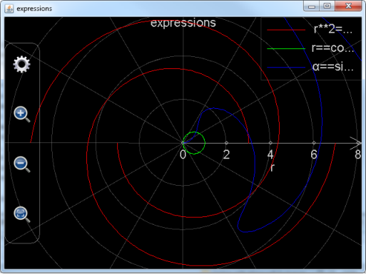
圖3： 調用plot_exprs函數繪制表達式極坐標圖形。
用戶還需註意的是，在調整極坐標圖形繪制範圍的時候，幅值（也就是r）方向的繪制範圍會發生改變，但是幅角（也就是α）的繪制範圍永遠是從-2*pi到2*pi，不會發生改變。這也符合極坐標圖形的特點：放大縮小圖像不會對幅角的範圍有任何影響。
再給出繪制三維圖形的例子。比如用戶想繪制出一個橢球體
x2 + 2 y2 + z2 = 20
，和一個切割球體的曲面
，則輸入的表達式為
plot_exprs("x**2+2*y**2+z**2==20","z=ln(3*x**2+y**2+2*y+2)*sin(x*y/10)")
或者省去非隱函數的變量部分（如上所述，隱函數任何部分都不能省略）
plot_exprs("x**2+2*y**2+z**2==20","ln(3*x**2+y**2+2*y+2)*sin(x*y/10)")
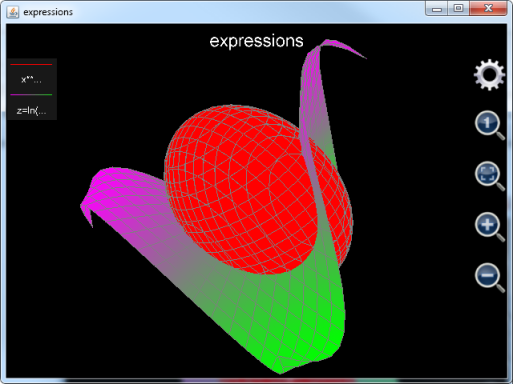
圖4： 調用plot_exprs函數繪制表達式三維圖形。
和二維圖像類似，用戶可以放大縮小圖像，但是，用戶用鼠標或者單個手指在圖像按住並滑動不是拖動圖像，而是旋轉圖像。所以，如果用戶想要設置繪圖範圍，唯一的辦法是點擊齒輪按鈕。點擊齒輪按鈕出現的設置對話框如下：
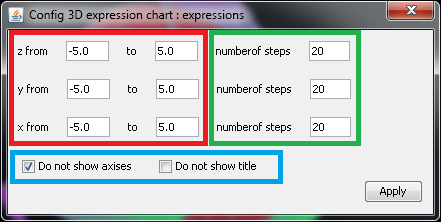
圖5： 設置表達式三維圖形。
在設置對話框中，紅色矩形所包含的部分用於設置在各個坐標軸方向的繪圖範圍，綠色矩形所包含的部分為每個坐標軸方向上的步數，也就是每個坐標軸方向上計算並繪制多少個點，藍色舉行所包含的部分為設置是否隱藏坐標軸和標題，以方便用戶觀察圖像。註意在1.6.7版以前，用戶只能選擇同時隱藏坐標軸和標題或者同時顯示坐標軸和標題，默認狀態為顯示坐標軸和標題；從1.6.7版開始，用戶可以分開設置坐標軸和標題的隱藏或顯示狀態，默認狀態為顯示標題但隱藏坐標軸。
還要註意，如果是對隱函數作圖，圖像有可能只有一種顏色，而如果是對非隱函數作圖，圖像曲面的顏色是漸變的。但無論是哪種情況，用戶都無法具體決定曲面使用哪種顏色。
最後給出另外一個繪制三維圖形的例子：
plot_exprs("x**2-z**2==20","x**2-y**2==6")
，繪制的圖形如下（坐標軸和標題已經隱藏）：
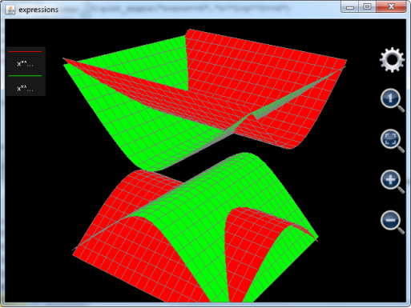
圖6： 根據總的未知變量的個數繪制出三維圖形。
。照道理來講，x**2-z**2==20和x**2-y**2==6實際上都是二維曲線，如果調用plot_exprs分別單獨繪制它們的圖像，用戶看到的是兩條在二維平面上的雙曲線。但是，由於這裏plot_exprs要一起繪制這兩個表達式，而這兩個表達式中，總的變量的個數為3（包括x、y和z），所以，最後繪制的圖像是三維的而不是二維的。
最後還要指出一點，plot_exprs函數是用MFP語言編寫的函數，plot_exprs函數的各個參數（也就是待繪圖的表達式）只是原封不動地傳遞給了更底層的函數。由於這個原因，用戶在調用函數之前所定義的變量如果出現在plot_exprs的表達式中，plot_exprs函數不會自動地對其求值。比如用戶定義了一個變量a，它的值為3，然後調用plot_exprs("x+a")繪制圖形，MFP不會把"x+a"視為"x+3"而在二維平面上繪制出一條直線，MFP的做法是將a看作和x一樣的一個變量而在三維空間中作出一個平面。所以，如果用戶想動態地繪制x+a的圖像，每次調用plot_exprs時，就要動態地更新表達式字符串，比如，可以調用plot_exprs("x+"+a)，這樣，a當前的數值就會被自動地添加到字符串"x+"後面從而得到新的字符串為"x+3"。同樣地，plot_exprs函數內部只能看到MFP的缺省引用空間，也就是頂級引用空間和::mfp以及其下級引用空間。調用plot_exprs的函數所能看到的引用空間無法傳遞到plot_exprs函數內部。這樣一來，在調用plot_exprs的函數看來完全沒有問題的函數參數，傳遞給plot_exprs後就可能會出現找不到函數的錯誤。比如用戶自定義了一個引用空間，名字為::aaaaa，在這個引用空間內用戶定義了一個函數叫做aaaaaF()，然後用戶在調用plot_exprs作圖之前通過using citingspace語句聲明使用引用空間::aaaaa，但這個聲明並不能夠簡化plot_exprs的調用，用戶還是必須在plot_exprs的字符串參數中給出aaaaaF()函數的絕對路徑，也就是，
plot_exprs("::aaaaa::aaaaaF(x)")
，而plot_exprs("aaaaaF(x)")則會出錯，原因是在plot_exprs函數內部引用空間::aaaaa並不在搜索列表上。
除了plot_exprs，後面介紹的繪圖函數，也有很多是用MFP編寫然後調用更底層的函數的，所以，建議用戶在繪制包含預定義變量的表達式的圖像時，總是使用上述辦法，並且在給出用戶自定義函數的絕對引用空間路徑，以保證代碼的一致性。
第2節 繪制常規坐標系下的二維圖像
繪制常規坐標系下的二維圖形，MFP提供了以下函數：
函數名 | 函數幫助信息 |
plot2dex | plot2dex(6...) : 函數plot2DEX調用plot_multi_xy以繪制由最多8條2-D曲線所構成的圖像。其包括以下參數：1.圖像名字（圖像文件名）；2.圖像標題；3.X軸標題；4.Y軸標題；5.圖像背景色；6.是否顯示網格；7.曲線標題；8.曲線數據點顏色；9.曲線數據點形狀；10.曲線數據點大小；11.曲線連接線顏色；12.曲線連接線類型；13.曲線連接線粗細；14.t起始位置；15.t終止位置；16.t的間隔；17.以t為變量的X的表達式；18.以t為變量的Y的表達式...。其中，每增加一條新的曲線，需要添加12個參數（也就是參數7到18），最多定義8條曲線。另外要註意圖像背景色，曲線數據點的大小，曲線連接線顏色以及曲線連接線類型還沒有被實現，曲線連接線粗細僅支持0（意味著沒有連接線連接數據點）和非0（意味著有連接線連接數據點）。本函數的一個例子為：plot2DEX("chart 3", "3rd chart", "x", "y", "black", true, "cv1", "blue", "x", 2, "blue", "solid", 1, -5, 5, 0.1, "t", "t**2/2.5 - 4*t + 6", "cv2", "red", "square", 4, "square", "solid", 1, -10, 10, 0.1, "5*sin(t)", "10*cos(t)") 。 |
plot_2d_curves | plot_2d_curves(6...) : 函數plot_2d_curves繪制由最多1024條2-D曲線所構成的圖像。其包括以下參數：1.圖像名字（圖像文件名）；2.圖像標題；3.X軸標 題；4.Y軸標題；5.圖像背景色；6.是否顯示網格（註意這個參數是一個字符串，其值為"true"或者"false"）；7.曲線標題；8.曲線數據 點顏色；9.曲線數據點形狀；10.曲線數據點大小；11.曲線連接線顏色；12.曲線連接線類型；13.曲線連接線粗細；14.內部變量的名字（通常 為"t"）；15.內部變量的起始位置；16.內部變量的終止位置；17.內部變量的每一步變化間隔；18.基於內部變量的X的表達式；19.基於內部變 量的Y的表達式...。其中，每增加一條新的曲線，需要添加13個參數（也就是參數7到19），最多定義1024條曲線。另外要註意圖像背景色，曲線數據 點的大小，曲線連接線顏色以及曲線連接線類型還沒有被實現，曲線連接線粗細僅支持0（意味著沒有連接線連接數據點）和非0（意味著有連接線連接數據點）。 本函數的一個例子為：plot_2d_curves("chart 3", "3rd chart", "x", "y", "black", "true", "cv1", "blue", "x", 2, "blue", "solid", 1, "t", -5, 5, 0.1, "t", "t**2/2.5 - 4*t + 6", "cv2", "red", "square", 4, "square", "solid", 1, "t", -10, 10, 0.1, "5*sin(t)", "10*cos(t)") 。 |
plot_2d_data | plot_2d_data(16) : 函數plot_2d_data分析最少1組，最多8組數值向量，每組數值向量將會被繪制為一條曲線。輸入的參數個數可以為1個（繪制一條曲線），2個（繪制一條曲線），4個（繪制2條曲線），6個（繪制3條曲線），8個（繪制4條曲線），10個（繪制5條曲線），12個（繪制6條曲線），14個（繪制7條曲線），16個（繪制8條曲線）。每一個參數都是一個數值向量（也就是一維矩陣）。如果只有一個參數，該參數中的每一個元素將會是繪制出的曲線中的一個點，否則，奇數號參數決定曲線中的每一個點的x值，偶數號參數決定每一個點的y值。註意決定x值的參數中包含的元素個數應該和決定y值的參數中包含的元素相同。函數例子包括plot_2d_data([5.5, -7, 8.993, 2.788])以及plot_2d_data([2.47, 3.53, 4.88, 9.42], [8.49, 6.76, 5.31, 0.88], [-9, -7, -5, -3, -1], [28, 42, 33, 16, 7])。 |
plot_multi_xy | plot_multi_xy(2...) : plot_multi_xy(包含>=2個參數)用於繪制2維或極坐標圖像，每個圖像最多包括1024條曲線。參數1為圖像名字，參數2為圖 像設置，該參數是一個字符串，比如"chart_type:multiXY;chart_title:1 chart;x_title:x;x_min:- 6.2796950076838645;x_max:6.918480857169536;x_labels:10;y_title:y;y_min:- 4.487378580559947;y_max:4.1268715788884345;y_labels:10;background_color:black;show_grid:true"。 註意chart_type的值是multiXY（用於繪制二維圖像）或者multiRangle（用於繪制極坐標圖像），x_labels和 y_lables分別代表x和y軸上有多少刻度標記（對於極坐標圖像是R軸有多少刻度標記，幅角的刻度標記不可設）。從參數3開始，每3個參數定義一條曲 線，在這3個參數中，第一個參數為曲線設置，第二個參數是包含所有x數值（或者R數值）的向量，第三個參數是包括所有y值（或者幅角值）的向量。曲線設置 參數為一個字符串，比 如"curve_label:cv2;point_color:blue;point_style:point;point_size:1;line_color:blue;line_style:solid;line_size:1"。 另外註意x和y的每一個數值都必須為實數，x和y的數值個數必須一致。本函數不返回數值。本函數的一個例子是 plot_multi_xy("chart2", "chart_type:multiXY;chart_title:1 chart;x_title:x;x_min:-6;x_max:6;x_labels:6;y_title:y;y_min:-4;y_max:4;y_labels:5;background_color:black;show_grid:true", "curve_label:cv2;point_color:blue;point_style:circle;point_size:3;line_color:blue;line_style:solid;line_size:1", [-5, -3, -1, 0, 1, 2, 3, 4, 5], [-3.778, -2.9793, -2.0323, -1.1132, 0.2323, 1.2348, 3.9865, 2.3450, 0.4356]) 。 |
其中，plot2dex和plot_2d_curves是用來在指定範圍內會制2維表達式曲線，plot_2d_data用於繪制二維數據圖像。Plot_multi_xy為更底層的函數，它被plot2dex和plot_2d_data函數所調用。
需要註意的是，plot_2d_curves是從1.6.7版中才將接口暴露給用戶的函數，這個函數在1.6.6及其以前版本中也存在，但是繪制曲線數目最多只能有8條。從1.6.7版開始，plot_2d_curves可以繪制曲線的數目增加到1024條，並且由於plot_2d_curves由JAVA實現，速度遠比plot2dEx快，強烈建議用戶使用plot_2d_curves來取代plot2dEx。
以上4個函數，也包括從本節開始往後的所有繪圖函數，和plot_exprs都有一個很大的區別。Plot_exprs繪制表達式圖像時不設定繪圖範圍，而是根據用戶平移縮放圖像，動態地調整繪圖範圍，圖像上的點在繪圖範圍調整時自動重新計算。而以上4個函數，也包括從本節開始往後的所有繪圖函數，在圖像生成的時候，繪圖的範圍已經確定，即便用戶平移縮放圖像，繪圖的範圍也不會改變，圖像上的點也不會重新計算。由於這個原因，用戶操作由這些函數繪制出來的圖形，會很平滑，不會有“卡”的感覺。
Plot_2d_curves函數事實上就是安卓上的可編程科學計算器的獨立的“繪制圖形”-〉“繪制二維圖像”工具的函數版。它所需要的參數中，前6個參數用於設置圖像本身，分別為圖像的文件名（文件擴展名.mfpc會被自動加上，不用用戶輸入），圖像的標題，x軸的名字，y軸名字，背景色和是否繪制網格。註意，這些參數均為字符串，其中參數是否繪制網格為是一個字符串代表的布爾值（"true"或者"false"），而背景顏色所支持的字符串包括"white "（白色），"black"（黑色），"red"（紅色），"green"（綠色），"blue"（藍色），"yellow"（黃色），"cyan"（青色），"magenta"（紫紅色），"dkgray"（深灰色）以及"ltgray"（淺灰色），缺省為黑色。
從第7個參數開始，每13個參數用於設置一條曲線。它們分別是
1． 曲線的名字（基於字符串）；
2． 曲線上的點的顏色（基於字符串，顏色選擇範圍和背景色一樣）；
3． 曲線上的點的形狀（基於字符串，可選的形狀為"point"（點），"circle"（圓圈），"triangle"（三角形），"square"（方形），"diamond"（菱形）以及"x"（對角叉））；
4． 曲線上的點的大小（這個設置項必須為正整數，但還沒有實現，用戶隨便填一個正整數即可）；
5． 點和點之間的連接線的顏色（基於字符串，顏色選擇範圍和背景色一樣）；
6． 點和點之間的連接線的形態（基於字符串，但還沒有實現，用戶填入"solid"即可）；
7． 點和點之間的連接線的粗細（必須是一個非負整數，如果為0，線將不會被繪制）；
8． 內部變量的名字（通常為"t"）
9． 變量t（如果內部變量名字被命名為t的話，否則就是其他的變量名）的變化範圍的起始值（必須是一個實數。這裏的t，和用基於安卓的可編程科學計算器上獨立的“繪制圖形”工具繪制二維圖像時所使用的t是一樣的）；
10． 變量t的變化範圍的終止值（必須是一個實數）；
11． 變量t的變化的步長（必須是一個實數，t的變化範圍除以變化步長加1就是要繪制的點的個數。註意用戶可以將其設置為0，設置為0意味著由函數來決定步長）；
12． X坐標變化對於t的函數（基於字符串）；
13． Y坐標變化對於t的函數（基於字符串）；
由於plot_2d_curves函數最多可以繪制1024條曲線，它的參數個數最多可以達到6+13*1024等於13318個。事實上，用戶完全可以對plot_2d_curves的參數進行編程，繪制出比較復雜的圖形。
舉個例子，比如用戶想用plot_2d_curves繪制一個橢圓和一條拋物線，橢圓的函數為
4x2 + y2 = 16
，拋物線的函數為
。對於繪制橢圓，用戶可以設置x等於2*cos(t)，y等於4*sin(t)，t的變化範圍是從0到2*pi步長為0.02*pi。對於繪制拋物線，用戶可以設置x等於t，y等於t**2/2.5-4*t+6，t的變化範圍是從-5到5，步長為0.3。整個函數的調用如下：
Plot_2d_curves("chart 1", "plo2dEx chart", "x", "y", "black", "true", "cv1", "red", "diamond", 3, "blue", "solid", 1, "t", -5, 5, 0.3, "t", "t**2/2.5 - 4*t + 6 ", "cv2", "green", "point", 2, "green", "solid", 2, "t", 0, 2*pi, 0.02*pi, "2*cos(t)", "4*sin(t)")
。繪制出的圖形如下。用戶可以隨意拖動或者縮放圖像，圖像的變化非常平滑，沒有任何遲滯。但要註意，在繪圖範圍之外（對於拋物線圖像，t，事實上也就是x小於-5或者大於5時），是沒有圖形被繪制的，盡管事實上拋物線的伸展範圍遠遠超過圖像的繪圖範圍）。
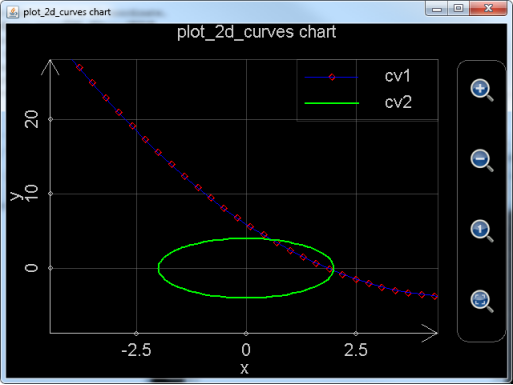
圖7： 調用plot_2d_curves繪制指定範圍的二維圖像。
還要註意，這幅圖像已經被可編程科學計算器自動保存以方便用戶日後再次打開。如果這幅圖像是在安卓系統上繪制的，那麽用戶點擊主界面的“管理圖形文件”圖標，則可以進入圖像文件夾。由於在調用plot_2d_curves時已經給圖形文件命名為chart 1，所以生成的圖形文件的文件名應該是chart 1.mfpc。用戶找到它，長按該文件所對應的圖標，則可以再次打開它。如果這幅圖像是用基於JAVA的可編程科學計算器繪制的，在電腦上，我們可以找到JAVA的可編程科學計算器所在的AnMath目錄的charts子目錄，chart 1.mfpc保存在該目錄中。用戶如果想打開它，需要在基於JAVA的可編程科學計算器中，選擇“工具”菜單-〉“觀看圖像”子菜單，或者按下Ctrl-O快捷鍵來打開此文件。
再舉個例子。比如，用戶想要繪制正三角形。正三角形的三條邊的表達式分別為
以及
。那麽可以調用plot_2d_curves繪制三條線作為三角形的三條邊。第一條線的表達式為x=t和y=sqrt(3)*t+2，t從-sqrt(3)到0步長為0.02；第二條線的表達式為x=t和y=-sqrt(3)*t+2，t從0到sqrt(3)步長為0.02；第三條線的表達式為x=t和y=-1，t從sqrt(3)到sqrt(3)。整個調用語句如下：
plot_2d_curves("char 2", "plot_2d_curves chart", "x", "y", "black", "true", "cv1", "red", "point", 3, "red", "solid", 1, "t", -sqrt(3), 0, 0.02, "t", "sqrt(3)*t+2", "cv2", "green", "point", 3, "green", "solid", 1, "t", 0, sqrt(3), 0.02, "t", "-sqrt(3)*t+2", "cv3", "blue", "point", 3, "blue", "solid", 1, "t", -sqrt(3), sqrt(3), 0.02, "t", "-1")
。繪制出來的圖形如下：
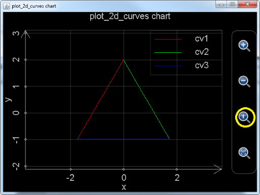
圖8： 調用plot_2d_curves繪制三角形。
需要註意，圖像剛剛生成時，由於x軸和y軸的坐標單位的長度不同，所以看起來並不像一個正三角形，這時，用戶可以點擊下圖黃色圈圈中的放大鏡裏面有一個小1的按鈕，自動調整x和y軸的坐標單位。這樣得到的圖形，就是標準的正三角形了。
Plot_2d_data函數則是用於繪制二維數據曲線圖。它的每一個參數都必須是一個一維數組，數組的每一個元素都必須是實數。如果參數只有一個，那麽該數組的第一個元素所對應的數據點在x軸的坐標為1，在y軸的坐標為第一個元素的值，第二個元素所對應的數據點在x軸的坐標為2，在y軸的坐標為第二個元素的值，…，以此類推，有多少個元素就有多少個數據點。比如，以下命令繪制出一條折線，折線的連接點為（1，1），（2，7），（3，8），（4，6）：
Plot_2d_data([1,7,8,6])
，繪制出的圖形如下：
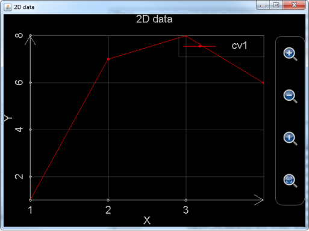
圖9： 調用plot_2d_data，僅使用一個參數繪制數據圖。
如果參數多於一個，那麽參數個數必須為偶數個，並且是兩個兩個一組，每一組中的兩個參數為元素個數相同的一維數組，分別對應該組參數所代表的數據點集合的x坐標和y坐標集，比如，想繪制數據點集（-1.71，6.24），（8.93，-7.08），（3.11，5.85），（4.28，-5.76）以及（5.99，-3.24），所需要的兩個參數為[-1.71, 8.93, 3.11, 4.28, 5.99]和[6.24, -7.08, 5.85, -5.76, -3.24]。
以下語句繪制了兩個數據集，這兩個數據集中的點的個數並不相同，並且第二個數據集種，y的值有一個為Nan（無定義數），Nan的效果相當於數據集的點之間的連接線在這個點斷開：
Plot_2d_data([-1.71, 8.93, 3.11, 4.28, 5.99], [6.24, -7.08, 5.85, -5.76, -3.24], [1.88, 2.41, 5.71, 7.66, 12.47, 15.19], [-3.69, 2.12, -1.74, Nan, 2.98,8.71])
繪制出的圖形如下：
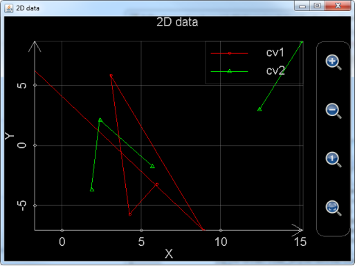
圖10： 調用plot_2d_data，使用2組參數同時繪制2個數據集，註意其中的綠色數據集的點之間的連接線有間斷。
需要註意的是，用戶雖然可以縮放拖動plot_2d_data所繪制出來的圖像，但是無法設置每個數據集所使用的顏色以及點和線的形態，也無法保存所生成的圖形。
Plot_multi_xy則是非常底層的函數。這個函數和plot_2d_data一樣是直接繪制數據，而不是根據表達式求得每個點的數據值然後加以繪制。Plot_2d_data直接調用這個函數。而plot2dEx則是先將表達式的每一個數據點的值都計算出來，然後再調用plot_multi_xy。
Plot_multi_xy的第一個參數為基於字符串的圖像的名字，也就是去掉擴展名.mfpc的圖像文件名。
Plot_multi_xy的第二個參數為圖像的設置，這個參數是把所有的圖像級別的設置放在一個字符串裏面，每一個設置都基於
設置項目:設置項目的值;
的模式，然後將各個設置的首尾連接在一起。比如：
"chart_type:multiXY;chart_title:1 chart;x_title:x;x_min:-6.2796950076838645;x_max:6.918480857169536;x_labels:10;y_title:y;y_min:-4.487378580559947;y_max:4.1268715788884345;y_labels:10;background_color:black;show_grid:true"
，這裏的chart_type是圖形類型，必須為multiXY，chart_title為圖像標題，x_title為圖像x軸的名稱，x_min為最開始顯示x軸的範圍的最小值，x_max為最開始顯示x軸的範圍的最大值，x_label表示x軸上有多少個刻度標記，y_title為圖像y軸的名稱，y_min為最開始顯示y軸的範圍的最小值，y_max為最開始顯示y軸的範圍的最大值，y_label表示y軸上有多少個刻度標記，background_color為背景色，show_grid為是否顯示網格。
Plot_multi_xy的第3個參數為一條曲線的設置。這個參數是把所有的該曲線的設置放在一個字符串裏面，每一個設置都基於
設置項目:設置項目的值;
的模式，然後將各個設置的首尾連接在一起。比如：
"curve_label:cv2;point_color:blue;point_style:circle;point_size:3;line_color:blue;line_style:solid;line_size:1"
，這裏curve_label是曲線標題，point_color是曲線點的顏色，point_style是曲線上點的形狀（圓形，方形等），point_size是點的大小（和plot_2d_curves一樣，這一項還沒有實現，用戶隨便設置一個正整數即可），line_color是曲線的點的連接線的顏色，line_style是連接線的類型（和plot_2d_curves一樣，這一項還沒有實現，用戶設置為solid就好），line_size是線的寬度（必須為非負整數）。
Plot_multi_xy的第4個參數為該曲線上每一個點在x軸上的坐標，註意這個參數必須為一個一維數組，數組中的每一個元素必須是實數，和plot_2d_data一樣，如果該元素是Nan，則曲線的連接線將在該點斷開。
Plot_multi_xy的第5個參數為該曲線上每一個點在y軸上的坐標，註意這個參數必須為一個一維數組，數組的長度和第4個參數必須一致，數組中的每一個元素必須是實數，和plot_2d_data一樣，如果該元素是Nan，則曲線的連接線將在該點斷開。
如果用戶想要繪制不止一條曲線，則需要輸入另外一組參數3，4和5。用戶最多可以繪制1024條曲線（對於1.6.6及以前版本，最多只能繪制8條曲線），所以plot_multi_xy最多支持2+1024*3等於3074個參數。
Plot_multi_xy的例子如下：
plot_multi_xy("chart2", "chart_type:multiXY;chart_title:1 chart;x_title:x;x_min:-6;x_max:6;x_labels:6;y_title:y;y_min:-4;y_max:4;y_labels:5;background_color:black;show_grid:true", "curve_label:cv2;point_color:blue;point_style:circle;point_size:3;line_color:blue;line_style:solid;line_size:1", [-5, -3, -1, 0, 1, 2, 3, 4, 5], [-3.778, -2.9793, -2.0323, -1.1132, 0.2323, 1.2348, 3.9865, 2.3450, 0.4356])
上述例子繪制的圖像為
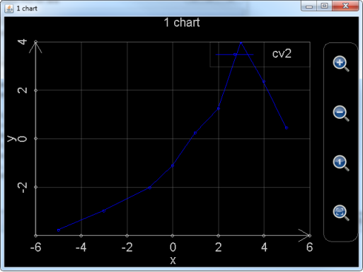
註意，和plot_2d_curves一樣，由於plot_multi_xy給出了圖像文件的文件名，用戶也可以在可編程科學計算器中再次打開它所生成的圖像。
第3節 繪制極坐標系下的二維圖像
繪制極坐標系下的二維圖形，MFP提供了和繪制普通坐標系下二維圖形的類似的函數如下：
函數名 | 函數幫助信息 |
plot_polar | plot_polar(6...) : 函數plot_polar調用plot_multi_xy以繪制由最多8條極坐標曲線所構成的圖像。其包括以下參數：1.圖像名字（圖像文件名）；2.圖像標題；3.R軸標題；4.幅角標題；5.圖像背景色；6.是否顯示網格；7.曲線標題；8.曲線數據點顏色；9.曲線數據點形狀；10.曲線數據點大小；11.曲線連接線顏色；12.曲線連接線類型；13.曲線連接線粗細；14.t起始位置；15.t終止位置；16.t的間隔；17.以t為變量的R的表達式；18.以t為變量的幅角的表達式...。其中，每增加一條新的曲線，需要添加12個參數（也就是參數7到18），最多定義8條曲線。另外要註意圖像背景色，曲線數據點的大小，曲線連接線顏色以及曲線連接線類型還沒有被實現，曲線連接線粗細僅支持0（意味著沒有連接線連接數據點）和非0（意味著有連接線連接數據點）。本函數的一個例子為：plot_polar("chart 3", "3rd chart", "R", "Angle", "black", true, "cv1", "blue", "point", 0, "yellow", "solid", 1, -5, 5, 0.1, "cos(t)", "t", "cv2", "red", "square", 4, "green", "solid", 1, 0, PI*2.23, PI/10, "5*sqrt(t)", "t + PI") 。 |
plot_polar_curves | plot_polar_curves(6...) : 函數plot_polar_curves繪制由最多1024條極坐標曲線所構成的圖像。其包括以下參數：1.圖像名字（圖像文件名）；2.圖像標題；3.幅度軸標題；4.幅角標題（需要註意幅角標題在圖中實際上不會被顯示）；5.圖像背景色；6.是否顯示網格（註意這個參數是一個字符串，其值為"true"或者"false"）；7.曲線標題；8.曲線數據點顏色；9.曲線數據點形狀；10.曲線數據點大小；11.曲線連接線顏色；12.曲線連接線類型；13.曲線連接線粗細；14.內部變量的名字（通常為"t"）；15.內部變量的起始位置；16.內部變量的終止位置；17.內部變量的每一步變化間隔；18.基於內部變量的幅度的表達式；19.基於內部變量的幅角的表達式...。其中，每增加一條新的曲線，需要添加13個參數（也就是參數7到19），最多定義1024條曲線。另外要註意圖像背景色，曲線數據點的大小，曲線連接線顏色以及曲線連接線類型還沒有被實現，曲線連接線粗細僅支持0（意味著沒有連接線連接數據點）和非0（意味著有連接線連接數據點）。本函數的一個例子為：plot_polar_curves("chart 3", "3rd chart", "R", "angle", "black", "false", "cv1", "blue", "x", 2, "blue", "solid", 1, "t", -5, 5, 0.1, "t", "t**2/2.5 - 4*t + 6", "cv2", "red", "square", 4, "square", "solid", 1, "t", -10, 10, 0.1, "5*sin(t)", "10*cos(t)") 。 |
plot_polar_data | plot_polar_data(16) : 函數plot_polar_data分析最少1組，最多8組數值向量，每組數值向量將會被繪制為一條極坐標曲線。輸入的參數個數可以為2個（繪制一條曲線），4個（繪制2條曲線），6個（繪制3條曲線），8個（繪制4條曲線），10個（繪制5條曲線），12個（繪制6條曲線），14個（繪制7條曲線），16個（繪制8條曲線）。每一個參數都是一個數值向量（也就是一維矩陣）。奇數號參數決定曲線中的每一個點的R值，偶數號參數決定每一個點的幅角值。註意決定R值的參數中包含的元素個數應該和決定幅角值的參數中包含的元素相同。函數一個例子為plot_polar_data([2.47, 3.53, 4.88, 9.42], [8.49, 6.76, 5.31, 0.88], [-9, -7, -5, -3, -1], [28, 42, 33, 16, 7])。 |
不難發現，plot_polar，plot_polar_curves和plot_polar_data函數與前一節中詳細介紹的plot2dEx，plot_2d_curves和plot_2d_data函數是一一對應的，它們甚至參數的輸入都是幾乎一模一樣。並且，和前面用戶2D繪圖的版本一樣，plot_polar_curves由JAVA實現，最多能繪制1024條曲線，無論繪圖速度還是曲線數量都遠遠強於plot_polar函數，所以將在未來的版本中逐步取代plot_polar函數。
Plot_polar_curves和上一節中的plot_2d_curves的區別在於，第三個參數對於plot_polar_curves來講是R軸（也就是極坐標中的幅角軸）的名稱，而對於plot_2d_curves來講是x軸的名稱，第四個參數對於plot_polar_curves來講是幅角的名稱，對於plot_2d_curves來講是y軸的名稱。Plot_polar_curves和plot_2d_curves一樣，定義一條曲線也需要13個參數，不同的是，定義每條曲線的13個參數的倒數第二個參數對於plot_polar_curves函數來講是幅值對內部變量（通常變量名稱是t）的函數，倒數第一個參數是幅角對內部變量的函數，而定義每條曲線的13個參數的倒數第二個參數對於plot_2d_curves函數來講是x軸的坐標對內部變量的函數，倒數第一個參數是y軸坐標對內部變量的函數。
以下是使用plot_polar_curves函數繪制蓮花和蝴蝶形狀的例子。蓮花形狀的方程式為
r = sin θ + sin3(2.5θ)........0 ≤ θ ≤ 4π
，那麽，如果將θ（也就是幅角）對t的表達式設置為t，r（也就是幅值）對t的表達式則是r(t)==sin(t)+sin(2.5*t)**3，t的變化範圍是0到4*pi，我們可以設定步長為0.05。
蝴蝶形狀的極坐標方程式為
，那麽，如果將θ（也就是幅角）對t的表達式設置為t，r（也就是幅值）對t的表達式則是r(t)==0.6*exp(sin(t))-2*cos(4*t)+sin((2*t-pi)/24)**5，t的變化範圍是-pi到pi，我們可以設定步長為0.02。
整個繪圖函數的調用語句為：
plot_polar_curves("LotusAndButterfly", "Lotus & Butterfly", "R", "Angle", "black", "true", "Lotus", "yellow", "point", 0, "red", "solid", 3, "t", 0, 4*pi, 0.05, "sin(t)+sin(2.5*t)**3", "t", "Butterfly", "green", "circle", 4, "blue", "solid",1,"t",-pi, pi,0.02,"0.6*exp(sin(t))-2*cos(4*t)+sin((2*t-pi)/24)**5","t")
繪制出來的圖像如下：
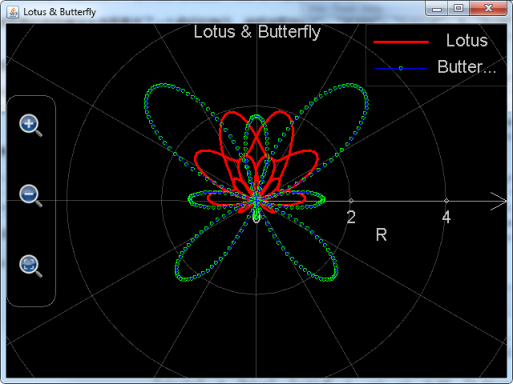
圖12： 調用plot_polar_curves繪制蓮花和蝴蝶。
和plot_2d_curves函數一樣，上述繪制出來的圖案被保存為文件（文件名為plot_polar_curves的第一個參數加上.mfpc擴展名，也就是LotusAndButterfly.mfpc）存放AnMath目錄下的charts子目錄中。用戶可以在可編程科學計算器中打開。
Plot_polar_data和上一節中的plot_2d_data的參數輸入的區別在於，plot_polar_data不能夠僅僅只輸入一個一維數組作為參數。Plot_polar_data輸入的參數必須是成對的，每對參數對定義一組數據點，每對參數包括兩個一維數組，，數組中的元素必須為實數或者Nan，每對參數中兩個數組的長度必須相符。其中，奇數號數組定義了該組數據點的幅值，偶數號數組定義了數據點的幅角。
下述例子用於在極坐標系中繪制兩組數據，第一組數據中含有4個點，第二組中有6個點。但要註意第二組數據中有一個點的幅值為Nan，所以，第二組數據各點之間的連線在這一點斷開。
plot_polar_data([2.47, 3.53, 4.88, 9.42], [8.49, 6.76, 5.31, 0.88], [-9, -7, Nan, -3, -1, 1], [28, 42, 33, 16, 7, 0])
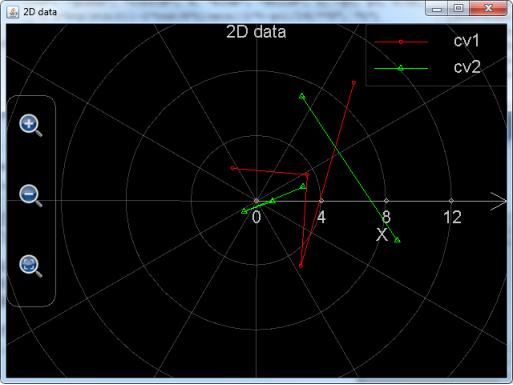
圖13： 調用plot_polar_data在極坐標系中繪制數據圖。
Plot_polar和plot_polar_data實際上都是使用MFP語言本身編寫的繪圖函數，它們進行繪圖時，都調用了上一節中介紹的plot_multi_xy函數。在上一節的函數表中，對plot_multi_xy的介紹已經很清楚了：plot_multi_xy(包含至少2個參數)用於繪制2維或極坐標圖像，每個圖像最多包括1024條曲線。參數1為圖像名字，參數2為圖像設置，該參數是一個字符串，比如"chart_type: multiRangle;chart_title:1 chart;x_title:x;x_min:-6.2796950076838645;x_max:6.918480857169536;x_labels:10;y_title:y;y_min:-4.487378580559947;y_max:4.1268715788884345;y_labels:10;background_color:black;show_grid:true"。註意這裏chart_type的值不再是multiXY（用於繪制二維圖像）而是multiRangle（用於繪制極坐標圖像）了。x_labels對於極坐標圖像來講是R軸有多少刻度標記，y_labels對於極坐標幅值的設定毫無影響，因為幅角的刻度標記的個數永遠是8個，不可以更改。所以用戶只用給y_labels隨便填入一個正整數即可。
那麽，如果把上一節中在常規坐標系下調用plot_multi_xy繪制的圖形搬到極坐標系下會是怎樣的呢，運行下述語句：
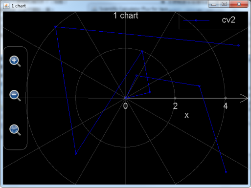
圖14： 調用plot_multi_xy在極坐標系中繪制數據圖形。
plot_multi_xy("chart2", "chart_type:multiRangle;chart_title:1 chart;x_title:x;x_min:-6;x_max:6;x_labels:6;y_title:y;y_min:-4;y_max:4;y_labels:5;background_color:black;show_grid:true", "curve_label:cv2;point_color:blue;point_style:circle;point_size:3;line_color:blue;line_style:solid;line_size:1", [-5, -3, -1, 0, 1, 2, 3, 4, 5], [-3.778, -2.9793, -2.0323, -1.1132, 0.2323, 1.2348, 3.9865, 2.3450, 0.4356])
，可以看到繪制出的圖形為參見上圖。
上述例子在極坐標系上的圖案似乎雜亂無章，對比圖8.11：，不難得出結論，極坐標系和常規坐標系是展現數據的兩種不同方式，有時候在一個坐標系下找不到規律的數據，放到另外一個坐標系下，就能得到很好的分析效果。
第4節 繪制三維圖像
MFP提供了以下函數用於繪制三維圖形：
函數名 | 函數幫助信息 |
plot3d | plot3d(5...) : 函數plot3D調用plot_multi_xyz以繪制由最多8條3-D曲面所構成的圖像。其包括以下參數：1.圖像名字（圖像文件名）；2.圖像標 題；3.X軸標題；4.Y軸標題；5.Z軸標題；6.曲線標題；7.是網格還是填充表面（true是網格，false是填充表面）；8.z值最小的時候的 顏色；9.最小的z值（註意如果是null，意味著讓軟件自己找到最小的z值）；10.z值最大的時候的顏色；11.最大的z值（註意如果是null，意 味著讓軟件自己找到最大的z值）；12.變量u的起始值；13.變量u的終止值；14.變量u的間隔（0意味著間隔由軟件決定）；15.變量v的起始 值；16.變量v的終止值；17.變量v的間隔（0意味著間隔由軟件決定）；18.以u，v為變量的X的表達式；19.以u，v為變量的Y的表達 式；20.以u，v為變量的Z的表達式；...。其中，每增加一條新的曲線，需要添加15個參數（也就是參數6到20），最多定義8條曲線。該函數的一個 例子為：plot3D("chartI", "first chart", "x", "y", "z", "Curve1", true, "red", -0.5, "green", null, 0, pi, pi/8, -pi/2, pi/2, 0, "sin(u)*cos(v)", "sin(u)*sin(v)", "cos(u)") 。 |
plot_3d_surfaces | plot_3d_surfaces(5...) : 函數plot_3d_surfaces繪制由最多1024條3-D曲面所構成的圖像。其包括以下參數：1.圖像名字（圖像文件名）；2.圖像標題；3.X軸標題；4.Y軸標題；5.Z軸標題；6.曲線標題；7.是網格還是填充表面（這是一個布爾值，true是網格，false是填充表面）；8.z值最小的時候的正面的顏色；9.z值最小的時候的反面的顏色；10.最小的z值（註意如果是null，意味著讓軟件自己找到最小的z值）；11.z值最大的時候的正面的顏色；12.z值最大的時候的反面的顏色；13.最大的z值（註意如果是null，意味著讓軟件自己找到最大的z值）；14.第一個內部變量的名字（通常為"u"）；15.第一個內部變量的起始值；16.第一個內部變量的終止值；17.第一個內部變量的每一步變化的間隔（0意味著間隔由軟件決定）；18.第二個內部變量的名字（通常為"v"）；19.第二個內部變量的起始值；20.第二個內部變量的終止值；21.第二個內部變量的每一步變化的間隔（0意味著間隔由軟件決定）；22.基於前述兩個內部變量的X的表達式；23.基於前述兩個內部變量的Y的表達式；24.基於前述兩個內部變量的Z的表達式；...。其中，每增加一條新的曲面，需要添加19個參數（也就是參數6到24），最多定義1024條曲面。該函數的一個例子為：plot_3D_surfaces("chartI", "first chart", "x", "y", "z", "Curve1", false, "red", "cyan", -0.5, "green", "yellow", null, "u", 0, pi, pi/8, "v", -pi/2, pi/2, 0, "sin(u)*cos(v)", "sin(u)*sin(v)", "cos(u)") 。 |
plot_3d_data | plot_3d_data(24) : 函數plot_3d_data分析最少1組，最多8組數值矩陣，每組數值矩陣將會被繪制為一條曲面。輸入的參數個數可以為1個（繪制一條曲面），3個（繪 制一條曲面），6個（繪制2條曲面），9個（繪制3條曲面），12個（繪制4條曲面），15個（繪制5條曲面），18個（繪制6條曲面），21個（繪制7 條曲面），24個（繪制8條曲面）。如果只有一個參數，該參數必須是一個2維矩陣，矩陣中的每一個元素將會是繪制出的曲線中的一個點的z值，否則，每3個 參數組成一個參數組，在每個參數組中，第一個參數必須是一個一維矩陣，參數中的元素值決定的決定曲面中各點的x值，第二個參數也必須是一個一維矩陣，參數 中的元素值決定的決定曲面中各點的y值，第三個參數必須是一個二維矩陣，矩陣中的元素值決定每一個點的z值。註意決定x值的參數中包含的元素個數以及決定 y值的參數中包含的元素應該和決定z值的參數中包含的元素個數相符。函數例子包括plot_3d_data([[2.47, 3.53, 4.88, 9.42], [8.49, 6.76, 5.31, 0.88], [-9, -7, -5, -3, -1]])以及plot_3d_data([1,2,3],[4,5,6,8],[[3,7,2],[5,8,9],[2,6,3],[7,4,4]], [8,7,4,8],[2,1],[[9,3,2,6],[4,5,3,7]])。 |
plot_multi_xyz | plot_multi_xyz(2…) : plot_multi_xyz(包含至少2個參數)用於繪制3維圖像，每個圖像最多包括1024條曲面。參數1為圖像名字，參數2為圖像設置，圖像設置參數是 一個字符串，比如"chart_type:multiXYZ;chart_title:This is a graph;x_title:x axis;x_min:-24.43739154366772;x_max:24.712391543667717;x_labels:10;y_title:Y axis;y_min:-251.3514430737091;y_max:268.95144307370913;y_labels:10;z_title:Z axis;z_min:-1.6873277335234405;z_max:1.7896774628184482;z_labels:10"。需要註 意的是chart_type的值必須是multiXYZ，x_labels，y_labels和z_lables分別代表x，y和z軸上有多少刻度標記。 從參數3到參數34，每4個參數定義一條曲線，在這4個參數中，第一個參數為曲線設置，第二個參數是包含所有x數值的矩陣，第三個參數是包括所有y值的矩 陣，第四個參數是包括所有z值的矩陣。曲線設置參數為一個字符串，比 如"curve_label:cv2;is_grid:true;min_color:blue;min_color_1:cyan;min_color_value:- 2.0;max_color:white;max_color_1:yellow;max_color_value:2.0"。另外註意x，y和z的每一 個數值都必須為實數，x，y和z的矩陣的尺寸必須一致。本函數不返回數值。本函數的一個例子為：plot_multi_xyz("chartII", "chart_type:multiXYZ;chart_title:This is a graph;x_title:x;x_min:-5;x_max:5;x_labels:6;y_title:Y;y_min:-6;y_max:6;y_labels:3;z_title:Z;z_min:-3;z_max:1;z_labels:4", "curve_label:cv1;min_color:blue;min_color_1:green;max_color:yellow;max_color_1:red", [[-4, -2, 0, 2, 4],[-4, -2, 0, 2, 4],[-4, -2, 0, 2, 4]], [[-5, -5, -5, -5, -5], [0, 0, 0, 0, 0], [-5, -5, -5, -5, -5]], [[-2.71, -2.65, -2.08, -1.82, -1.77], [-2.29, -2.36, -1.88, -1.45, -1.01], [-1.74, -1.49, -0.83, -0.17, 0.44]]) 。 |
其中，plot3d和plot_3d_surfaces是用來在指定範圍內會制3維表達式曲面或者曲線，plot_3d_data用於繪制三維數據圖像。Plot_multi_xyz為更底層的函數，它被plot3d和plot_3d_data函數所調用。和plot2dEx以及plot_polar函數一樣，plot3d函數由MFP語言寫成，最多只能在一張圖上繪制8條曲面，它的JAVA實現的對應版本plot_3d_surfaces可以最多繪制1024條曲面（在1.6.6及其以前的版本中plot_3d_surfaces函數接口不對用戶開放，並且最多也只能繪制8條曲面），計算速度也快很多，強烈建議用戶逐步放棄使用plot3d函數而轉移到plot_3d_surfaces函數上。
Plot_3d_surfaces函數事實上就是安卓上的可編程科學計算器的獨立的“繪制圖形”-〉“繪制三維圖像”工具的函數版。它所需要的參數中，前5個參數用於設置圖像本身，分別為圖像的文件名（文件擴展名.mfpc會被自動加上，不用用戶輸入），圖像的標題，x軸的名字，y軸名字和z軸名字。這些參數都是字符串。圖像的背景色永遠是黑色，不能夠由用戶設定。從第6個參數開始，每19個參數用於設置一條曲線（或者曲面）。它們分別是：
1． 曲線（面）的名字（基於字符串）；
2． 曲面是網格還是填充表面（註意該參數不是字符串，而是布爾值。true是網格，false是填充表面。如果繪制的曲面，這兩種都可以。如果繪制的是曲線，強烈建議設置為true，也就是網格，否則，曲線和坐標軸的顏色一樣，都是灰色的，看都看不清）；
3． Z坐標方向上最小值對應的曲面的正面顏色（基於字符串，包括"white "（白色），"black"（黑色），"red"（紅色），"green"（綠色），"blue"（藍色），"yellow"（黃色），"cyan"（青色），"magenta"（紫紅色），"dkgray"（深灰色）以及"ltgray"（淺灰色），如果字符串不是上述任何一種，將使用白色）；
4． Z坐標方向上最小值對應的曲面的反面顏色（基於字符串，包括"white "（白色），"black"（黑色），"red"（紅色），"green"（綠色），"blue"（藍色），"yellow"（黃色），"cyan"（青色），"magenta"（紫紅色），"dkgray"（深灰色）以及"ltgray"（淺灰色），如果字符串不是上述任何一種，將使用白色）；
5． 最小的z值（註意，這個最小的z值不見得是曲面在Z坐標方向上的最小值，它只是定義了顏色的變化，也就是，圖案中任何小於最小z值的部分都被塗以最小z值對應的顏色，圖案中大於最小z值的部分的顏色從最小z值對應的顏色向最大z值所對應的顏色漸變。如果該值設置為null，則讓軟件自己尋找曲面或曲線的最小z值）；
6． Z坐標方向上最大值對應的曲面正面的顏色（基於字符串，包括"white "（白色），"black"（黑色），"red"（紅色），"green"（綠色），"blue"（藍色），"yellow"（黃色），"cyan"（青色），"magenta"（紫紅色），"dkgray"（深灰色）以及"ltgray"（淺灰色），如果字符串不是上述任何一種，將使用白色）；
7． Z坐標方向上最大值對應的曲面反面的顏色（基於字符串，包括"white "（白色），"black"（黑色），"red"（紅色），"green"（綠色），"blue"（藍色），"yellow"（黃色），"cyan"（青色），"magenta"（紫紅色），"dkgray"（深灰色）以及"ltgray"（淺灰色），如果字符串不是上述任何一種，將使用白色）；
8． 最大的z值（註意，這個最大的z值不見得是曲面在Z坐標方向上的最大值，它只是定義了顏色的變化，也就是，圖案中任何大於最大z值的部分都被塗以最大z值對應的顏色，圖案中小於最大z值的部分的顏色從最大z值對應的顏色向最小z值所對應的顏色漸變。如果該值設置為null，則讓軟件自己尋找曲面或曲線的最大z值）；
9． 第一個內部變量的名字，通常是u；
10． 第一個內部變量，也就是變量u（如果被命名為u的話）的變化範圍的起始值（必須是一個實數。這裏的u和用基於安卓的可編程科學計算器上獨立的“繪制圖形”工具繪制三維圖像時所使用的u是一樣的）；
11． 變量u的變化範圍的終止值（必須是一個實數）；
12． 變量u的變化的步長（必須是一個實數，u的變化範圍除以變化步長加1就是在u方向上要繪制的點的個數。註意用戶可以將其設置為0，設置為0意味著變化的步長由軟件決定）；
13． 第二個內部變量的名字，通常為v；
14． 第二個內部變量，也就是變量v（如果被命名為v的話）的變化範圍的起始值（必須是一個實數。這裏的v和用基於安卓的可編程科學計算器上獨立的“繪制圖形”工具繪制三維圖像時所使用的v是一樣的）；
15． 變量v的變化範圍的終止值（必須是一個實數）；
16． 變量v的變化的步長（必須是一個實數，v的變化範圍除以變化步長加1就是在v方向上要繪制的點的個數。註意用戶可以將其設置為0，設置為0意味著變化的步長由軟件決定）；
17． X坐標變化對於u和v的函數（基於字符串）；
18． Y坐標變化對於u和v的函數（基於字符串）；
19． Z坐標變化對於u和v的函數（基於字符串）；
由於plot_3d_surfaces函數最多可以繪制1024條曲線，它的參數個數最多可以達到5+19*1024等於19461個。
下面給出一個例子用於繪制彩色6面立方體。繪制立方體是所有三維繪圖軟件必包含的例子。MFP一樣也可以做到。繪制立方體的思路是，立方體的六個面每個面是plot_3d_surfaces函數的一個待繪制曲面，假設立方體的邊長為2，那麽可以定義u從-1到1步長為2（步長為2意味著曲面上不會有網格線出現，因為曲面本身就是網格中的一個格），v從-1到1步長也為2，由於立方體的任意一個面必然與某一個坐標軸在-1或者1垂直相交而平行於另外兩個坐標軸，所以x，y和z中，必然有一個等於-1或者1，另外兩個一個等於u，另一個等於v。整個調用語句如下：
Plot_3d_surfaces("3dBox", "3D Box", "x", "y", "z", _
"",false,"red","red",null,"red","red",null,"u",-1,1,2,"v",-1,1,2,"u","v","1", _
"",false,"green","green",null,"green","green",null,"u",-1,1,2,"v",-1,1,2,"u","1","v", _
"",false,"blue","blue",null,"blue","blue",null,"u",-1,1,2,"v",-1,1,2,"1","u","v", _
"",false,"yellow","yellow",null,"yellow","yellow",null,"u",-1,1,2,"v",-1,1,2,"u","v","-1", _
"",false,"cyan","cyan",null,"cyan","cyan",null,"u",-1,1,2,"v",-1,1,2,"u","-1","v", _
"",false,"magenta","magenta",null,"magenta","magenta",null,"u",-1,1,2,"v",-1,1,2,"-1","u","v")
繪制出的圖形效果如下：
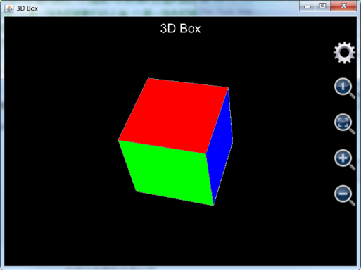
圖15： 調用plot_3d_surfaces函數繪制立方體。
註意到在上述例子中由於我們設置曲面的標題為空字符串，各個曲面的圖例說明不會在圖中顯示。
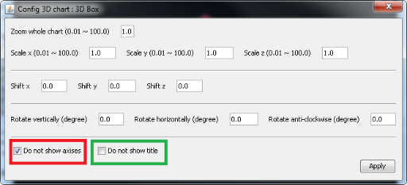
圖16： 設置三維圖形，隱藏坐標軸和標題。
用戶可以用手指或者鼠標拖動圖形進行旋轉，還可以點擊放大縮小圖標調整圖形大小（在安桌上，用戶還可以用捏合擴張的手勢進行同樣的操作），如果我們想要顯示坐標軸或者覺得標題太礙眼想隱藏標題，則可以點擊齒輪按鈕，不選中隱藏坐標軸（紅色的方框），但選擇隱藏標題（綠色方框），參見上圖。
需要註意的是，在可編程科學計算器1.6.6版中，用戶只能選擇同時隱藏坐標軸和標題或者同時顯示坐標軸和標題。在更老的版本中，用戶是無法隱藏坐標軸和標題的。
用戶不選中紅色長方形中的選擇框，但是選中綠色長方形中的選擇框，則坐標軸顯示但標題被隱藏。圖像效果參見下圖：
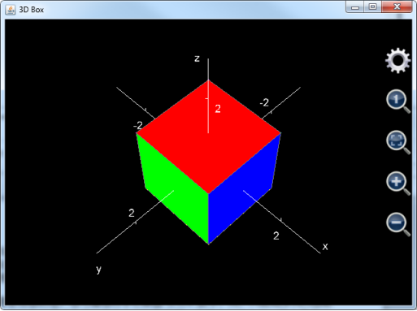
圖17： 隱藏坐標軸和標題後的三維立方體。
和plot_2d_curves函數一樣，由於用戶在調用函數時指定了文件名，生成的圖像會被自動保存在AnMath/charts目錄中方便日後用戶在可編程科學計算器中打開查看。
繪制立方體，只能算是MFP強大的三維繪圖功能的開胃甜點，以下例子向用戶展示如何用plot_3d_surfaces函數繪制北京的地標建築鳥巢。鳥巢的照片如下：
繪制鳥巢，並非是把鳥巢上的每一根鋼筋支架都畫出來。一些細節的東西在圖中將會被省略，繪制的關鍵在於鳥巢頂部圓環波浪形半開狀態的屋頂，和鳥巢四周圓環形，但又是傾斜的圍墻。
我們知道，如果用u和v作變量，u看作是幅角，v看作是半徑，圓形的表達式為
x = v cos u
y = v sin u
這裏，u的變化範圍是從-pi到pi，v是一個常數。
如果繪制的是圓環，相當於由很多同心圓層層疊加，這時，v就不再是一個常數，而是一個範圍，我們假設鳥巢屋頂的外徑為15，內徑為7.5，為了繪制鳥巢屋頂，v的範圍就是從7.5到15。
再假設鳥巢的平均高度是5，所以，鳥巢屋頂所在的曲面的z坐標平均值為5。
問題在於，鳥巢的屋頂並不是平的，它是一個波浪形，也就是一個余弦曲線，從鳥巢的實物照片中可以看到，鳥巢屋頂的變化是從高到低再到高再到低，就相當於從-pi到pi的範圍內，該余弦曲線震蕩了兩次，所以，該余弦曲線應該用cos(2*u)來表示，所以鳥巢屋頂的實際大致（註意是大致）高度應該是5*(1 + 0.3 * cos(2*u))，這裏的0.3表示余弦曲線的震蕩幅度，這個值是通過看圖估計出來的。
還註意到，鳥巢屋頂高度波浪形的變化並非是從裏到外均勻一致的，越靠近邊緣，屋頂高度的波浪形變化越明顯，所以，鳥巢屋頂高度的震蕩部分還要乘以一個和半徑相關的系數，所以，鳥巢屋頂高度，也就是鳥巢屋頂的z坐標的最終表達式為5*(1 + 0.3 * cos(2*u)*v/15)，這裏5為鳥巢屋頂的平均高度，0.3為屋頂高度的震蕩幅度，15為鳥巢的最大半徑。
本來，如果鳥巢是一個標準的圓柱體，鳥巢屋頂的高度變化對屋頂上每個點的x坐標和y坐標並不會有影響。但是問題在於，鳥巢並不是標準的圓柱體。由於鳥巢的外墻是從上往下向內傾斜，所以，鳥巢實際上是一個倒置的圓椎體的一部分。這樣一來，屋頂的高度發生變化，會引起屋頂邊緣所在點的半徑發生畸變，屋頂的高度變高，屋頂邊緣的半徑就會變長，屋頂的高度變低，邊沿的半徑就會變短。我們假設鳥巢外墻的傾斜度（斜率）為5，由於已經假定鳥巢頂部的直徑為15，高度為5，所以鳥巢底部的直徑應該是15-5/5=14。換句話說，鳥巢所在椎體的上下半徑的差距為1，是最大半徑的1/15。這就意味著，鳥巢邊緣半徑隨高度的變化而變化，變化幅度為高度變化幅度的1/15。由於鳥巢屋頂的z坐標的最終表達式為5*(1 + 0.3 * cos(2*u)*v/15)，所以鳥巢屋頂的x坐標的最終表達式為v*(1 + 0.02 * cos(2*u)*v/15)*cos(u)，而y坐標的最終表達式為v*(1 + 0.02 * cos(2*u)*v/15)*sin(u)。這裏，0.02就是半徑變化的幅度，它是0.3的1/15。
下一步就是繪制鳥巢四周的圍墻，上面已經假設鳥巢的頂部最大半徑為15，底部最大半徑為14，高度為5。所，可以逆推得到，鳥巢所在的圓椎體的頂點所在位置為z==-14/(15-14)*5==-70，圓錐體表面的斜率為5。如果只是想繪制繪制這個圓錐體從半徑等於14到半徑等於15的帶狀部分，可以將變量v看作高度，變化範圍從0到5，u看作幅角，變化範圍從-pi到pi，則x、 y和z的表達式為
z = v
但是，由於屋頂的波浪形變化，造成了鳥巢外墻的頂部高度發生畸變，這種畸變從頂部向底部傳遞的過程中逐漸減弱，外墻底部是完全平坦的。由於v的頂部是5，底部是0，我們可以簡單地給z乘以屋頂邊緣高度的震蕩系數，也就是z==v*(1+0.3*cos(2*u))，這裏的0.3就是上面提到的屋頂高度的震蕩幅度。
由於屋頂高度發生變化，外墻上每個點的x和y的坐標也會有相應的畸變，由於鳥巢所在圓錐體的表面斜率為5，所以x和y坐標的畸變幅度應該是z方向畸變幅度的1/5。這樣一來，鳥巢外墻的x坐標的表達式為
X==(14 + v * (1 + 0.3 * cos(2*u))/5) * cos(u)
Y==(14 + v * (1 + 0.3 * cos(2*u))/5) * sin(u)
鳥巢的底部就是一個簡單的圓形，半徑為14，高度為0，u看作是幅角，變化範圍是從-pi到pi，v看作是半徑，變化範圍從0到14，那麽鳥巢底部x，y和z的表達式為
x = (14 cos u)
y = (14 sin u)
z = 0
所以，最終匯制鳥巢圖案的語句為：
Plot_3d_surfaces("birdnest", "Bird 's Nest", "x", "y", "z", _ //設定圖像的名字
"", false, "red", "blue", null, "cyan", "ltgray", null, "u", -pi, pi, 0, "v", 0, 5, 0, "(14 + v * (1 + 0.3 * cos(2*u))/5) * cos(u)", "(14 + v * (1 + 0.3 * cos(2*u))/5) * sin(u)", "v * (1 + 0.3 * cos(2*u))", _ // 繪制鳥巢的四周圍墻
"", false, "magenta", "red", null, "yellow", "green", null, "u", -pi, pi, 0, "v", 7.5, 15, 0, "v*(1 + 0.02 * cos(2*u)*v/15)*cos(u)", "v*(1 + 0.02 * cos(2*u)*v/15)*sin(u)", "5*(1 + 0.3 * cos(2*u)*v/15)", _ // 繪制鳥巢的頂部
"", false, "green", "cyan", null, "green", "cyan", null, "u", -pi, pi, 0, "v", 0, 14, 0, "v*cos(u)", "v*sin(u)", "0") // 繪制鳥巢的底部
圖像繪制結果參見下圖。註意圖像剛開始顯現的時候，圖形的尺寸比較小，用戶可以點擊綠色方框中的放大按鈕，將圖形放大，並用鼠標拖動圖形進行旋轉，調整觀察角度，以獲取最好的視覺效果。
還要註意，如果用戶使用的是1.6.6版本的可編程科學計算器，圖像剛開始顯現的時候，看起來並不像鳥巢，原因在於圖形太大，並且x、y和z軸的單位長度不成比例，用戶可以點擊紅色方框中的放大鏡中有一個小1的按鈕，將x、y和z軸比例調整為1：1：1，然後再點擊黃色方框中的縮小按鈕，便可以看到逼真的鳥巢圖形。
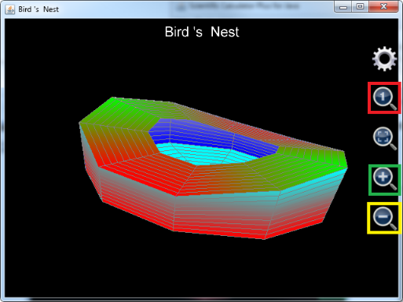
圖19： 鳥巢三維圖像。
如果用戶使用的是1.6.6及其以前版本的可編程科學計算器，在調用plot3d函數繪制包含多個曲目的3維圖形時，往往會被plot3d函數最多支持8組x，y和z的表達式的限制所困擾，但是，完全可以用plot3d函數繪制出復雜的，包括多於8個曲面的立體圖像。其辦法是，調用iff函數，在u（或者v）處於某一個範圍時繪制出一個曲面，在u（或者v）處於另外一個範圍時繪制出另一個曲面。為了避免兩個曲面相連，u（或者v）處於這兩個範圍之間時，x或者y或者z設置為Nan。這種辦法也可以用於plot_3d_surfaces、plot2dEx、plot_2d_curves、plot_polar和plot_polar_curves函數，當然由於從1.6.7版開始，plot_3d_surfaces、plot_2d_curves和plot_polar_curves函數一次均可繪制出1024條曲線，使用這個辦法對它們來說沒有意義。
為了方便1.6.6及其以前版本的可編程科學計算器用戶，在這裏給出直接使用plot3d函數繪制工具繪制上海東方明珠電視塔的代碼和在個人電腦上的繪圖效果（在安卓平臺上也可以同樣的函數繪制出同樣的效果圖），可以看到，使用MFP編程繪制復雜圖形，比在手機上輸入方便得多。另外需要註意的是plot3d函數是如何使用一組表達式繪制多個曲面的，比如，在繪制3根大小球之間的連接柱體時，plot3d函數設置u的變化範圍從0到8（也就是幅角從0到8*pi變化）；v的變化範圍從20到70（也就是立柱的高度為20到70）；x的表達式為iff(u<=2,1.5*cos(u*pi)-2,and(u>=3,u<=5), 1.5*cos(u*pi), u>=6, 1.5*cos(u*pi)+2, Nan)，這裏，u從0到2（也就是幅角從0到2*pi）用於繪制第一個柱體，u從3到5（也就是幅角從3*pi到5*pi）用於繪制第二個柱體），u從6到8（也就是幅角從6*pi到8*pi）用於繪制第三個柱體，iff函數給出了在這三個範圍內x的不同的表達式。
需要註意，在這三個範圍之間，也就是u從2到3和從5到6，x的表達式值為Nan，其原因，如上所述，是為了保證這三根柱體的表面不是相互連接的。
同理，y的表達式為iff(u<=2,1.5*sin(u*pi)+2/sqrt(3),and(u>=3,u<=5), 1.5*sin(u*pi)- 4/sqrt(3), u>=6, 1.5*sin(u*pi)+2/sqrt(3), Nan)，而z由於僅僅表示高度，表達式相對簡單，就是v。
繪制上海東方明珠電視塔的代碼如下：
plot3d("Oriental_Pearl_Tower","Oriental Pearl Tower","x","y","z", _
"",false,"red",null,"yellow",null,0,8,0.25,0,20,20,"iff(u<=2,3*cos(u*pi)-(20-v)*sqrt(3)/2,and(u>=3,u<=5), 3*cos(u*pi), u>=6, 3*cos(u*pi)+(20-v)*sqrt(3)/2, Nan)","iff(u<=2,3*sin(u*pi)+(20-v)/2,and(u>=3,u<=5), 3*sin(u*pi)-(20-v)*sqrt(3)/2, u>=6, 3*sin(u*pi)+(20-v)/2, Nan)","v", _ //Plot supporting leaning columns（繪制底部三根支撐斜柱體）
"",false,"green",null,"yellow",null,-1,1,0.25,0,20,20,"cos(u*pi)*2","sin(u*pi)*2","v", _ //plot connection column（繪制連接柱）
"",false,"red",null,"cyan",null,-pi,pi,pi/10,-pi/2,pi/2,pi/10,"10*cos(u)*cos(v)","10*sin(u)*cos(v)","10*sin(v)+20", _ //plot the big ball（繪制大球）
"",false,"green",null,"blue",null,0,8,0.25,20,70,50,"iff(u<=2,1.5*cos(u*pi)-2,and(u>=3,u<=5), 1.5*cos(u*pi), u>=6, 1.5*cos(u*pi)+2, Nan)","iff(u<=2,1.5*sin(u*pi)+2/sqrt(3),and(u>=3,u<=5), 1.5*sin(u*pi)- 4/sqrt(3), u>=6, 1.5*sin(u*pi)+2/sqrt(3), Nan)","v", _ //plot the connection columns between the big ball and the small ball（繪制大球和小球之間的三根連接柱）
"",false,"magenta",null,"white",null,-pi,pi,pi/10,-pi/2,pi/2,pi/10,"6*cos(u)*cos(v)","6*sin(u)*cos(v)","6*sin(v)+70", _ //plot the small（繪制小球）
"",false,"yellow",null,"green",null,0,2,0.25,70,85,15,"cos(u*pi)*1.5","sin(u*pi)*1.5","v", _ //plot another column above the small ball（繪制小球上部的立柱）
"",false,"red",null,"cyan",null,-pi,pi,pi/10,-pi/2,pi/2,pi/10,"2*cos(u)*cos(v)","2*sin(u)*cos(v)","2*sin(v)+85", _ //Plot the smaller ball（繪制更小的球）
"",false,"red",null,"ltgray",null,-1,1,0.2,85,115,10,"0.5*max(0.2,(115-v)/30)*cos(u*pi)","0.5*max(0.2,(115-v)/30)*sin(u*pi)","v") //Plot the antenna on top（繪制頂部天線）
圖像繪制的效果如下圖（註意在1.6.6版及其以前版本中，用戶需要點擊放大鏡中有一個小1的按鈕以調整x，y和z的比例為1：1：1，還需要點擊齒輪按鈕隱藏坐標軸和標題）：
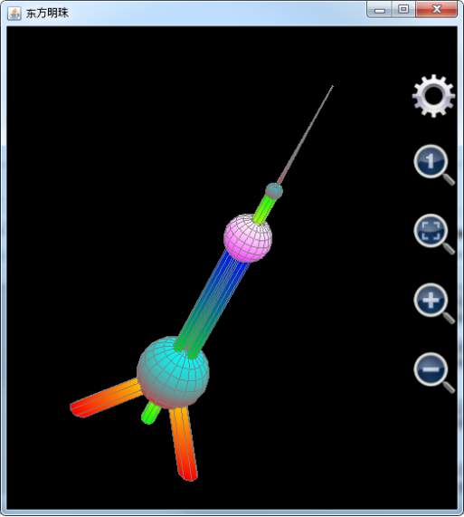
圖20： 用plot3d函數繪制上海地標東方明珠電視塔。
Plot_3d_surfaces函數不但可以繪制曲面，還可以繪制曲線。註意，在繪制曲線的時候，u和v中只有一個能發揮作用，否則就是曲面了。比如要繪制一條螺旋線，半徑為5，可以將u看作幅角，變化範圍從-2*pi到2*pi，x的表達式為5*cos(u)，y為5*sin(u)，z為u，繪制語句為
Plot_3d_surfaces("spiralline", "Spiral Line", "x", "y", "z", "", true, "cyan", "cyan", null, "red", "red", null, "u", -2*pi, 2*pi, pi/50, "v", 0, 1, 1, "5 * cos(u)", "5 * sin(u)", "u")
螺旋曲線繪制結果如下：
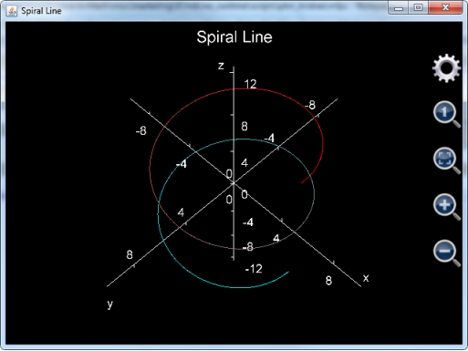
圖21： 用plot_3d_surfaces函數繪制螺旋曲線。
這裏需要註意幾點：
第一點， 雖然繪制曲線時，只有u起作用，但是v最好不要隨意設置，因為v的步數乘以u的步數就是最終要繪制點的個數。如果想要圖形盡可能快地繪制出來，可以設置v從0到1步長為1，也就是只有一步；
第二點， 如果是繪制曲線，參數是否僅僅繪制網格需要為true，否則，曲線的顏色會變成和坐標軸一樣的灰色而看不清楚；
第三點， 繪制上圖所示的螺旋線，步數要足夠多，否則就不夠平滑，基於這個原因，上面的例子中步長為pi/50，也就是總共有200步。
Plot_3d_data則用於在三維坐標系中繪制數據圖像。Plot_3d_data有兩種調用方式，第一種調用方式僅僅輸入一個參數，用於繪制一個曲面。該參數必須是一個二維矩陣，矩陣中的每一個元素都必須是實數，表示繪制出來的曲面上的一個點的z值，該元素在第一維的次序號對應於x值，在第二維的次序號對應於y值。比如：
Plot_3d_data([[7,5,3,6,10,14],[4,7,2,8,9,14],[4,3,9,2,9,15],[2,8,NaN,5,8,16],[-1,9,11,6,8,17],[-4,7,12,5,9,20]])
對應的繪制出的圖形為（註意已經將圖形旋轉放大以便於觀察）：
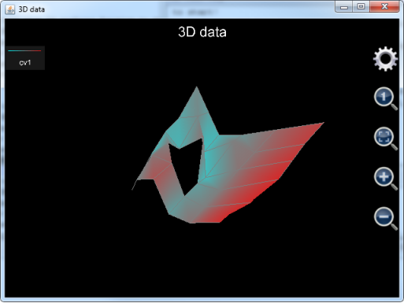
圖22： 用plot_3d_data函數繪制單一曲面。
註意到曲面的中間有一個洞，這是因為曲面所對應的數據數組中有一個點的值為Nan，Nan是無法被繪制出來的，所以此點所在的位置形成了一個洞。
Plot_3d_data也可以用來同時繪制多個曲面。在這種情況下，每繪制一個曲面需要3個參數組成一個參數組。在一個參數組中，第一個參數必須是一個一維數組，參數中的元素值決定的決定曲面中各點的x值，第二個參數也必須是一個一維數組，參數中的元素值決定的決定曲面中各點的y值，第三個參數必須是一個二維矩陣，矩陣中的元素值決定每一個點的z值。註意第三個參數的第一維的長度必須和第一個參數的長度一致，第三個參數的第二維的長度必須和第二個參數的長度保持一致。
在工程上，工程師經常需要觀察比較數據在三維中的分布情況，這時，就可以使用plot_3d_data函數同時繪制多個三維曲面。比如，在金融工程中，風險分析師經常需要分析一組期權產品的波動率曲面（Volatility surface），並根據波動率曲面來決定某一個期權的定價，可以用調用如下語句同時繪制兩個波動率曲面 ：
plot_3d_data([48.000000, 50.000000, 52.000000, 54.000000, 56.000000, 58.000000, 60.000000, 62.000000, 64.000000, 66.000000, 68.000000, 70.000000, 72.000000, 74.000000, 76.000000, 78.000000, 80.000000, 82.000000, 84.000000, 86.000000, 88.000000, 90.000000, 92.000000, 94.000000, 96.000000, 98.000000, 100.000000, 105.000000], [30, 58, 121, 212, 576, 940], _ //曲面1的x，y坐標
[[NAN, NAN, NAN, NAN, NAN, NAN, NAN, NAN, 0.49508067351396218000, 0.45756582984888738000, 0.41913711426069727000, 0.37990131595995524000, 0.34996178524456606000, 0.30776619051400522000, 0.28462015821129766000, 0.27075500739772851000, 0.26301012549556918000, 0.24950232072545608000, 0.24019484695203744000, 0.23175291515931623000, 0.21112501922301888000, 0.20651763047720664000, 0.21070439806536975000, 0.22206990800626822000, 0.23691523835915387000, 0.26035129175640970000, NAN, 0.35693427858118065000], _
[NAN, NAN, NAN, NAN, NAN, NAN, NAN, NAN, NAN, 0.36859505107478957000, 0.34682167993243251000, 0.33284975263494410000, 0.32119915959842893000, 0.31050760053766019000, 0.29974406021726552000, 0.29453798692550298000, 0.28157889138027392000, 0.27318479365993703000, 0.26342709777494933000, 0.25752572211832075000, 0.24780946658943892000, 0.24166776632146400000, 0.23722978504246392000, 0.23195815505284242000, 0.22898424812758009000, 0.22833835748043799000, 0.23681894432023268000, 0.26478408970435013000], _
[NAN, NAN, NAN, NAN, NAN, NAN, NAN, 0.36447017097320361000, 0.35449192506546090000, 0.34516619206807542000, 0.34261461130215798000, 0.32635501530861477000, 0.32107173363018415000, 0.31233375990009160000, 0.30479530303155050000, 0.29817914152719677000, 0.29058822590764583000, 0.28282080501333134000, 0.27496574457106382000, 0.26851242637016437000, 0.26141077894592291000, 0.25587622110424685000, 0.25097496943207720000, 0.24646926304153294000, 0.24360994236677280000, 0.24074283746453087000, 0.23796452973380869000, 0.23534059389240872000], _
[0.42886625487784302000, 0.42275377605823883000, 0.41329219686969904000, 0.40460391970410370000, 0.39481551194770520000, 0.38291712255814248000, 0.37662551028641211000, 0.36478616087804611000, 0.36022367426251140000, 0.35255567514870667000, 0.34632136686091713000, 0.33619033083866695000, 0.32940848011458052000, 0.32550914476490195000, 0.31762251703077932000, 0.31380139485946612000, 0.30905226419037485000, 0.30338087644402684000, 0.29873679230470152000, 0.28685190784393211000, 0.28138845244953115000, 0.27662410367186036000, 0.27058634105931750000, 0.26931959970842401000, 0.26493899498451701000, 0.26164809336719214000, 0.25887643135300442000, 0.25318504482282400000], _
[NAN, NAN, NAN, NAN, NAN, NAN, NAN, 0.36501592858551429000, 0.36002318219714213000, 0.35559613466145090000, 0.34848867397787564000, 0.34653605316601327000, 0.34331817675589471000, 0.33758506685395551000, 0.33494376931090725000, 0.33249369924862260000, 0.32894957372789690000, 0.32563131380755028000, 0.32252394427107839000, 0.31590635444985415000, 0.31230809418058103000, 0.30891316532484459000, 0.30690810447495731000, NAN, NAN, NAN, NAN, NAN], _
[NAN, NAN, NAN, NAN, NAN, NAN, NAN, NAN, NAN, NAN, NAN, NAN, NAN, 0.35115605953314510000, 0.34821397817102240000, 0.34569662266907020000, 0.34358159686638989000, 0.34085234801142689000, 0.34839263577550034000, 0.33660760870094886000, 0.33959719768707108000, 0.33713092050360410000, 0.33603184408546544000, NAN, NAN, NAN, NAN, NAN]], _ //曲面1的波動率二維矩陣
[50.000000, 52.000000, 54.000000, 56.000000, 58.000000, 60.000000, 62.000000, 64.000000, 66.000000, 68.000000, 70.000000, 72.000000, 74.000000, 76.000000, 78.000000, 80.000000, 82.000000, 82.500000, 83.000000, 84.000000, 86.000000, 88.000000, 90.000000, 92.000000, 94.000000, 96.000000], [24, 52, 143, 233, 506, 877], _ //曲面2x和y坐標
[[NAN, NAN, NAN, NAN, NAN, NAN, NAN, NAN, NAN, NAN, NAN, NAN, NAN, 0.22964633802072443000, 0.18031707781034231000, 0.13034337245591013000, 0.11131700480412310000, NAN, 0.10619822668851642000, 0.10041352495351766000, 0.10939206628254365000, 0.14908566947743185000, 0.16602982367522820000, NAN, NAN, NAN], _
[NAN, NAN, NAN, NAN, NAN, NAN, NAN, NAN, NAN, NAN, NAN, 0.22540094145088913000, 0.19705350522103846000, 0.16395345741263651000, 0.14144557031336311000, 0.12637305801604665000, NAN, 0.11119409065181833000, NAN, NAN, NAN, NAN, NAN, NAN, NAN, NAN], _
[NAN, NAN, NAN, NAN, NAN, NAN, 0.25715041824992257000, 0.23621769883269250000, 0.21525558611698195000, 0.20045165924029371000, 0.18541707800373045000, 0.17359058112818165000, 0.16231450779286907000, 0.14916833017145850000, 0.13963488906422594000, 0.13177711734828756000, 0.12730661724897638000, NAN, NAN, 0.10557373569647757000, 0.10119196691910112000, 0.10116033427429517000, 0.10388742349750228000, 0.10620359931911844000, 0.11622872282660483000, 0.12972672550374550000], _
[NAN, NAN, NAN, NAN, NAN, NAN, NAN, 0.20352671403747510000, 0.19298953607665226000, 0.18372653703149414000, 0.17460337106727522000, 0.16855579275820740000, 0.16219673193089182000, 0.15533583755104832000, 0.15143304483201725000, 0.14966908624163464000, 0.14551826337243573000, NAN, NAN, 0.13133944009346873000, 0.12356296864493185000, 0.11899060584716444000, 0.11960170233648706000, 0.11951725172463327000, 0.11866793224195711000, 0.12167362000206712000], _
[0.24384524786557735000, 0.23533516044988553000, 0.22716883635794988000, 0.21453230778081070000, 0.21474513249393276000, 0.20918925878245592000, 0.20609984918018193000, 0.20191453785290187000, 0.19781979463707985000, 0.19448827786958967000, 0.19106299814050737000, 0.19227308566292306000, 0.18922818688715029000, 0.18886743252564508000, 0.18912087690028995000, 0.18990974472166203000, 0.19268838899006788000, NAN, NAN, 0.13665902914514916000, 0.13309865533237508000, 0.13053916709176369000, 0.12692797194421160000, 0.12528654150114951000, NAN, NAN], _
[NAN, NAN, NAN, NAN, 0.20896766837849659000, 0.20149697646213488000, NAN, NAN, NAN, NAN, NAN, 0.20549683791479759000, 0.20493999835449925000, 0.20823799582345237000, 0.21129319127054960000, 0.21169404646035919000, 0.19212457911706818000, NAN, NAN, 0.18574033886119370000, 0.17054792142025460000, NAN, NAN, NAN, NAN, NAN]]) // 曲面2的波動率二維矩陣
上述語句中，曲面1和2 的x和y坐標均為一個一維向量，其中，x表示期權的價值狀態（Moneyness），y表示期權的有效期，z坐標則表示對應於某個價值狀態和有效期的期權的理論波動率。註意，由於數據的問題，有時候計算出來的理論波動率是不合理的，對於這種壞的點，在金融分析上面必須舍棄，plot_3d_data所具有的忽略值為Nan的點的特征，正好能夠實現這個要求，這就是我們看到z坐標的二維矩陣內部有很多Nan的原因。
上述語句最後繪制出的圖像如下，需要註意的是，如果用戶使用的是1.6.7版及其以後版本的可編程科學計算器，在圖形剛剛繪制出來的時候，由於圖形本身在x、y和z坐標軸上的跨度不成比例，看起來就像一條帶子，用戶無法觀察波動率分布的細節。這時，用戶需要點擊紅色方框中的自適應按鈕，讓軟件自動調整x、y和z的比例，以便於觀察，參見下圖8.23：；如果用戶使用的是1.6.6及其以前版本的可編程科學計算器，則無需點擊自適應按鈕，圖像繪制出來的初始狀態就是自適應x、y和z的比例。
調整後的圖形參見下圖8.24：，註意為了讓兩個波動率曲面正好位於圖像正中，已經將z軸平移了-0.3。並且坐標軸已經被設置為顯示，以方便用戶看清x、y和z軸單位長度的比例。

圖23： 用plot_3d_data函數同時繪制兩個波動率曲面（未經調整）。
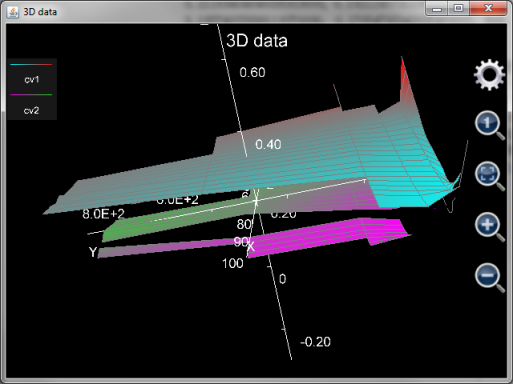
最後需要註意，plot_3d_data函數並不保存生成的圖像，這和plot_2d_data是一樣的。
Plot_multi_xyz則是非常底層的函數。這個函數和plot_3d_data一樣是直接繪制數據，而不是根據表達式求得每個點的數據值然後加以繪制。Plot_3d_data直接調用這個函數（但也要對數據做一些轉換）。而plot3d則是先將表達式的每一個數據點的值都計算出來，然後再調用plot_multi_xyz。
Plot_multi_xyz的第一個參數為基於字符串的圖像的名字，也就是去掉擴展名.mfpc的圖像文件名。
Plot_multi_xyz的第二個參數為圖像的設置，這個參數是把所有的圖像級別的設置放在一個字符串裏面，每一個設置都基於
設置項目:設置項目的值;
的模式，然後將各個設置的首尾連接在一起。比如：
"chart_type:multiXYZ;chart_title:This is a graph;x_title:x axis;x_min:-24.43739154366772;x_max:24.712391543667717;x_labels:10;y_title:Y axis;y_min:-251.3514430737091;y_max:268.95144307370913;y_labels:10;z_title:Z axis;z_min:-1.6873277335234405;z_max:1.7896774628184482;z_labels:10"
，這裏的chart_type是圖形類型，必須為multiXYZ，chart_title為圖像標題，x_title為圖像x軸的名稱，x_min為最開始顯示x軸的範圍的最小值，x_max為最開始顯示x軸的範圍的最大值，x_label表示x軸上有多少個刻度標記，y_title為圖像y軸的名稱，y_min為最開始顯示y軸的範圍的最小值，y_max為最開始顯示y軸的範圍的最大值，y_label表示y軸上有多少個刻度標記，z_title為圖像z軸的名稱，z_min為最開始顯示z軸的範圍的最小值，z_max為最開始顯示z軸的範圍的最大值，z_label表示z軸上有多少個刻度標記。
Plot_multi_xyz的第3個參數為一條曲線（面）的設置。這個參數是把所有的該曲線（面）的設置放在一個字符串裏面，每一個設置都基於
設置項目:設置項目的值;
的模式，然後將各個設置的首尾連接在一起。比如：
"curve_label:cv2;is_grid:true;min_color:blue;min_color_1:cyan;min_color_value:-2.0;max_color:white;max_color_1:yellow;max_color_value:2.0"
，這裏curve_label是曲線（面）標題，is_grid表示是否僅僅繪制網格，min_color表示正面Z坐標方向上最小值對應的顏色，min_color_1表示反面Z坐標方向上最小值所對應的顏色，min_color_value是最小的z值（註意，這個最小的z值不見得是曲面在Z坐標方向上的最小值，它只是定義了顏色的變化，也就是，圖案中任何小於最小z值的部分都被塗以最小z值對應的顏色，圖案中大於最小z值的部分的顏色從最小z值對應的顏色向最大z值所對應的顏色漸變。如果該值設置為null，則讓軟件自己尋找曲面或曲線的最小z值），max_color表示正面Z坐標方向上最大值對應的顏色，max_color_1表示反面Z坐標方向上最大值所對應的顏色，max_color_value是最大的z值（註意，這個最大的z值不見得是曲面在Z坐標方向上的最大值，它只是定義了顏色的變化，也就是，圖案中任何大於最大z值的部分都被塗以最大z值對應的顏色，圖案中小於最大z值的部分的顏色從最大z值對應的顏色向最小z值所對應的顏色漸變。如果該值設置為null，則讓軟件自己尋找曲面或曲線的最大z值）
Plot_multi_xyz的第4個參數為該曲線（面）上每一個點在x軸上的坐標，註意這個參數必須為一個二維數組，數組中的每一個元素必須是實數，和plot_3d_data一樣，如果該元素是Nan，則曲線（面）的連接線將在該點斷開。
Plot_multi_xyz的第5個參數為該曲線（面）上每一個點在y軸上的坐標，註意這個參數必須為一個二維數組，數組的尺寸和第四個參數必須一致，數組中的每一個元素必須是實數，和plot_3d_data一樣，如果該元素是Nan，則曲線（面）的連接線將在該點斷開。
Plot_multi_xyz的第6個參數為該曲線（面）上每一個點在z軸上的坐標，註意這個參數必須為一個二維數組，數組的尺寸必須和第四個以及第5個參數的尺寸相符合，數組中的每一個元素必須是實數，和plot_3d_data一樣，如果該元素是Nan，則曲線（面）的連接線將在該點斷開。
如果用戶想要繪制不止一條曲線，則需要輸入另外一組參數3，4，5和6。用戶最多可以繪制1024條曲線，所以plot_multi_xyz最多支持2+1024*4等於4098個參數。
Plot_multi_xyz的例子如下：
plot_multi_xyz("chartII", "chart_type:multiXYZ;chart_title:This is a graph;x_title:x;x_min:-5;x_max:5;x_labels:6;y_title:Y;y_min:-6;y_max:6;y_labels:3;z_title:Z;z_min:-3;z_max:1;z_labels:4", "curve_label:cv1;min_color:blue;min_color_1:green;max_color:yellow;max_color_1:red", [[-4, -2, 0, 2, 4],[-4, -2, 0, 2, 4],[-4, -2, 0, 2, 4]], [[-5, -5, -5, -5, -5], [0, 0, 0, 0, 0], [-5, -5, -5, -5, -5]], [[-2.71, -2.65, -2.08, -1.82, -1.77], [-2.29, -2.36, -1.88, -1.45, -1.01], [-1.74, -1.49, -0.83, -0.17, 0.44]])
上述例子繪制的圖像為一張類似於大致平放在x軸y軸所構成的平面上的紙，然後大致沿著x軸從正y軸方向向負y軸方向折疊，但並沒有完全疊合起來。這個例子是為了展現plot_multi_xyz函數完全可以繪制扭曲的表面，甚至在該表面上同一個x，y坐標對應於兩個不同的z值。
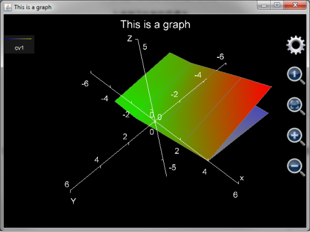
圖25： 用plot_multi_xyz函數繪制折疊過的表面。
事實上，由於plot_multi_xyz函數只是對一組空間上的點進行繪圖，而對這些點的x，y和z坐標沒有要求，這意味著只要知道了圖形的坐標點，用戶可以在三維空間中繪制出任何想要的圖形。
小結
本教程文檔詳細介紹了調用MFP繪圖函數進行繪圖的方法。繪圖函數可以分為2種。第一種是直接繪制表達式圖形。用戶在調用函數時無需輸入變量變化範圍，在圖形生成之後，用戶可以對繪圖範圍進行調整。這種繪圖方法簡單方便，但是代價是每次調整繪圖範圍都要部分或者全部重新計算每個繪制點的坐標，所以用戶可能會感到時延。
第二種繪圖函數是需要輸入各個變量基於t（二維圖形）或者u，v（三維圖形）的變化表達式和變化範圍。這樣的繪圖函數參數輸入比較復雜，但是繪制圖像完成之後，用戶對圖像進行拖拽或者縮放，不會有遲滯的感覺，此外，用這種繪圖方式可以繪制出非常復雜的圖形，比如北京的地標“鳥巢”和上海的地標“東方明珠”電視塔。從理論上講，完全可以通過使用這些繪圖函數繪制出任何用戶想要的圖形。